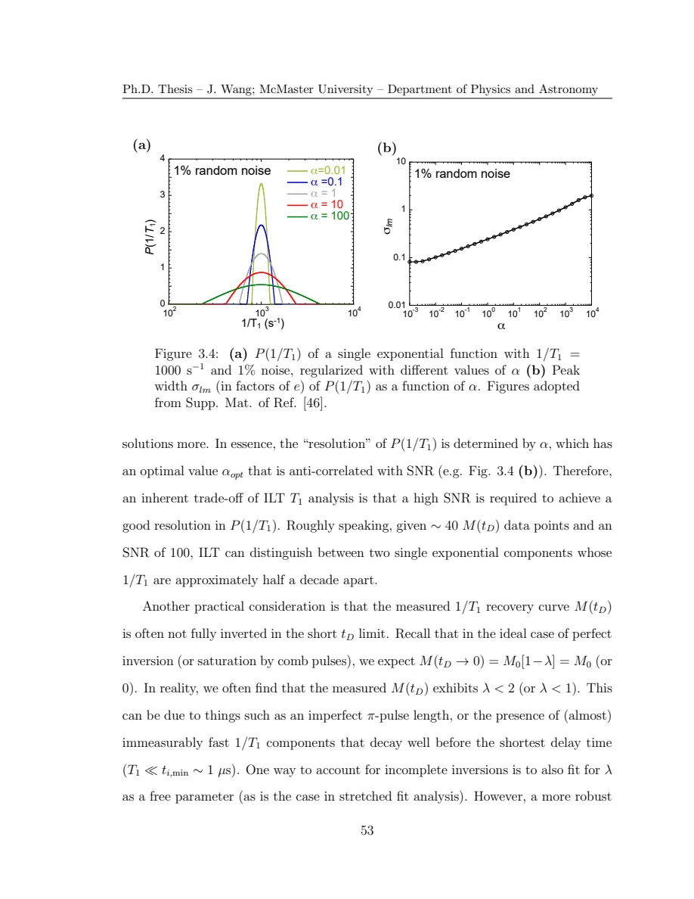

Wang · supplied source 2024 · chapter unit
4 · Check the method against known synthetic truth
Known synthetic truth tests the inversion under chosen conditions; it does not certify every material peak.
The question: When does a two-rate example help, and what does it leave untested?
Before you start: the terms you need
- Quantum spin liquid candidate: a material tested against a quantum-disordered model; a null ordering signal is insufficient identification.
- K: local resonance shift, sensitive to a coupling-weighted static susceptibility.
- 1/T₁: recovery rate that samples fluctuations in the probe frequency window.
- ILT: constrained, regularized inference of a relaxation-rate distribution from recovery data.
- log-rate density: probability is the area in d log₁₀(1/T₁), not peak height.
See → explain → check
Follow the idea in 2 pictures.
Picture 1 / 2
Add populations, not fitted rates
Look for: Fast and slow recoveries contribute with their weights.
Swipe across the picture to read every label, or enlarge it below.
- Green: slow recovery (30 s⁻¹)
- Orange: fast recovery (1000 s⁻¹)
- Purple: weighted sum (slow weight 0.60)
Exact chosen forward model, not measured data.
Their sum need not reveal two obvious populations by eye.
Check the original: Original PDF p. 64 · Original PDF p. 65
Picture 2 / 2
An average changes with its definition
Look for: Log weights and linear rates produce different means.
Swipe across the picture to read every label, or enlarge it below.
- Characteristic stretch rate
- Geometric log mean
- Arithmetic mean
Distinct summaries of a chosen distribution.
Always state the averaging convention.
Check the original: Original PDF p. 65 · Original PDF p. 66
Explain it back.
Try answering aloud before opening the explanation.
What happens when both rates become equal?
Their weighted sum reduces to a single-rate recovery regardless of the population weight.
Why do fastest auxiliary bins need caution?
They may absorb imperfect preparation or a missing short-time amplitude, rather than resolve a distinct physical environment within the measurement window.
Go deeper Follow the full argument
The two populations and their summed curve
The synthetic example has weight 0.6 at 30 s⁻¹ and 0.4 at 1000 s⁻¹, under unit equilibrium and saturation-style preparation. Forty recovery times across a broad delay range and 0.1% Gaussian noise are chosen. The forward curve is fully specified, so the inferred rates and areas can be compared with known truth. Under this setup, the thesis recovers peaks near 30.1 and 997 s⁻¹ and the expected fractions. A stretched fit compresses both into one characteristic rate and misses a shoulder. The example demonstrates what can be lost by a restrictive functional form, rather than presenting those two rates as observations in an actual sample.
Geometric means and resolution
For normalized log-rate weights, the thesis’s center is the exponential of the weighted log rate. It is a geometric mean, which gives about 122 s⁻¹ for the chosen two-rate model. The arithmetic mean would instead be 418 s⁻¹, so the averaging convention matters. The source links larger regularization to wider inferred peaks and lower practical resolution, and discusses how increased SNR helps distinguish components. Its rough half-decade separation example is tied to particular sampling and noise. Resolution is not a universal property of ILT that can be quoted independently of the acquisition, kernel, represented rate grid and regularization.
Original PDF p. 65 · Original PDF p. 66 · Original PDF p. 67
Visibility and incomplete preparation
At short measured times, incomplete inversion can arise from an imperfect pulse or recovery components faster than the shortest delay. The source discusses fitting a preparation factor and also representing extra very-fast bins, later excluding them from the physical analysis. Those auxiliary weights can account for a missing initial amplitude without demonstrating an actual separately resolved fast population. The guide’s interactive explorer computes only the exact forward two-population curve. It does not run the author’s inverse program or claim to recover distributions from arbitrary user data. Compare limiting cases—zero weight, equal rates and long delay—to understand the signal before interpreting an inversion.
Translate the mathematics Essential equations and their meaning
M(t) = 1 − 0.6 e^(−30t) − 0.4 e^(−1000t)
Symbols: t: seconds; rates: s⁻¹; unit equilibrium signal and saturation-style preparation.
The thesis’s synthetic example illustrates two populations. It is separate from the source’s material recovery kernels and measured data.
log₁₀ RCOG = Σⱼ wⱼ log₁₀ Rⱼ, with Σⱼwⱼ = 1
Symbols: Rⱼ: rate in bin j; wⱼ: normalized probability weight per log-rate bin.
The center is a geometric mean rate. Specify normalization and do not substitute an arithmetic mean.
Read the evidence Guided original source pages

Original PDF p. 67
What the evidence supports—and where it stops
- The browser explorer is a forward calculation only; no experimental inverse fit is performed.
Source version, reading coverage and preservation
All substantive text in Chapters 1–7, the reprinted research article and numerical appendices read; original working kernels, equations and key result figures visually checked.
Reviewed body pages: 15, 16, 17, 18, 19, 20, 21, 22, 23, 24, 25, 26, 27, 28, 29, 30, 31, 32, 33, 34, 35, 36, 37, 38, 39, 40, 41, 42, 43, 44, 45, 46, 47, 48, 49, 50, 51, 52, 53, 54, 55, 56, 57, 58, 59, 60, 61, 62, 63, 64, 65, 66, 67, 68, 69, 70, 71, 72, 73, 74, 75, 76, 77, 78, 79, 80, 81, 82, 84, 85, 86, 87, 88, 89, 90, 91, 92, 93, 94, 95, 96, 97, 98, 99, 100, 101, 102, 103, 104, 105, 106, 107, 108, 109, 110, 111, 112, 113, 114, 115, 116, 117, 118, 119, 120, 121, 122, 123. Personal acknowledgements omitted from teaching content. Bibliographies and external supplements not independently re-read; only material actually present in the thesis is covered.
Source SHA-256: 80ad8aaad2ce3f48320bef046c30907939f8018990292aa5ebb7e5269d912da2. Original file bytes preserved locally; public scientific page images are rendered from that source.
Thesis - Wang - 2024 - Disordered spin liquids - NMR and inverse Laplace analysis.pdf